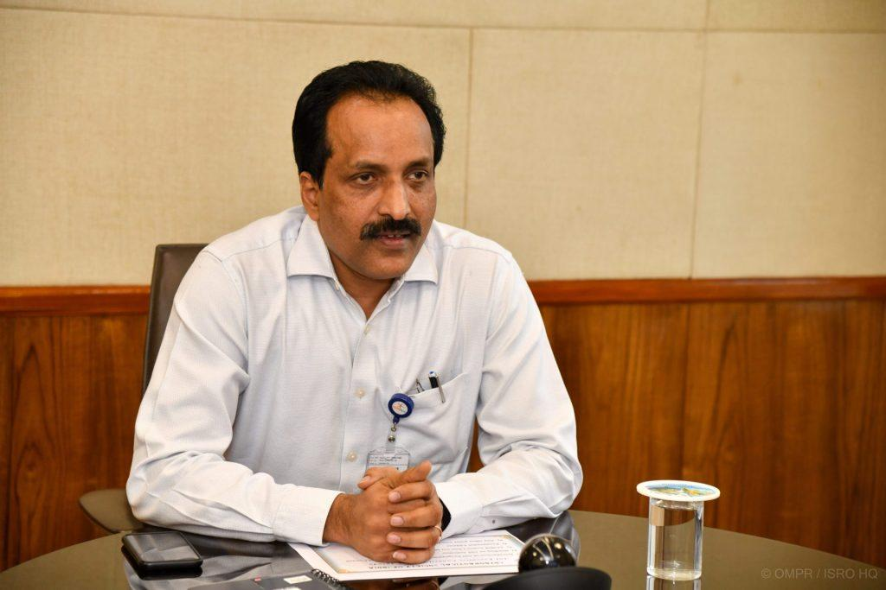
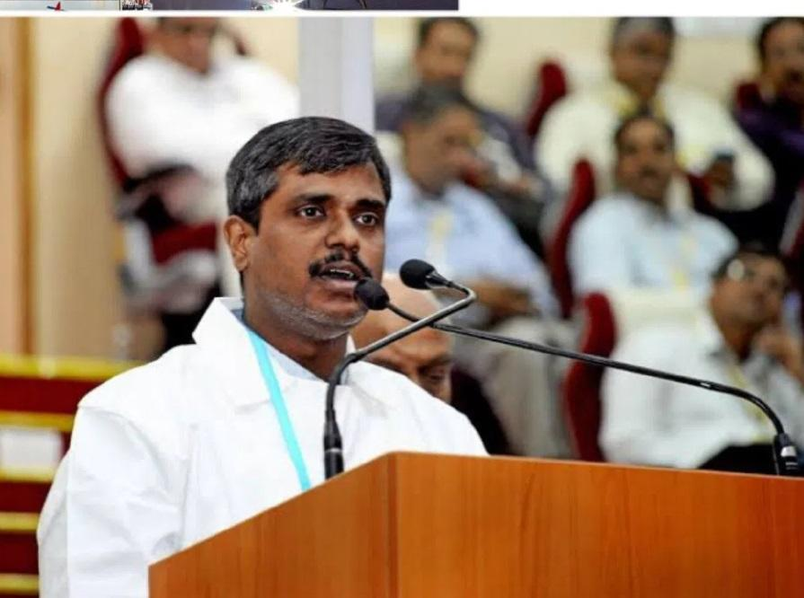
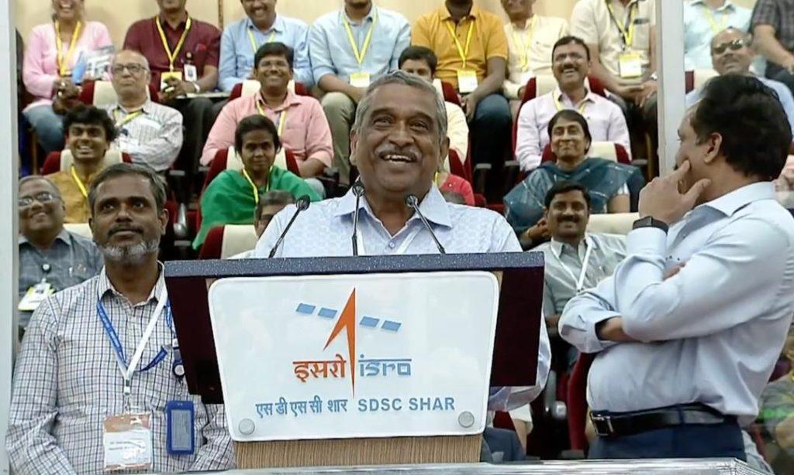
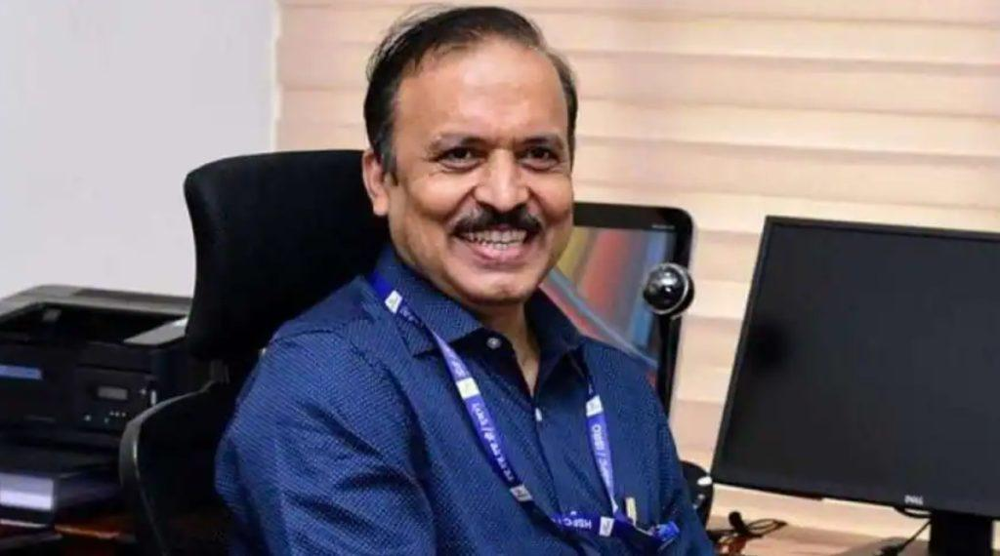
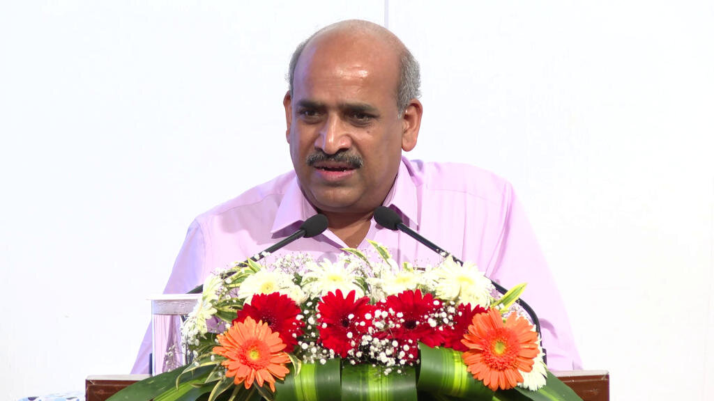
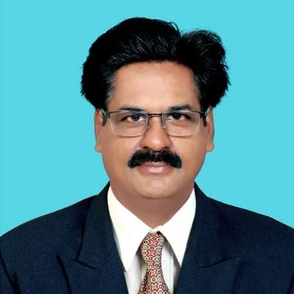
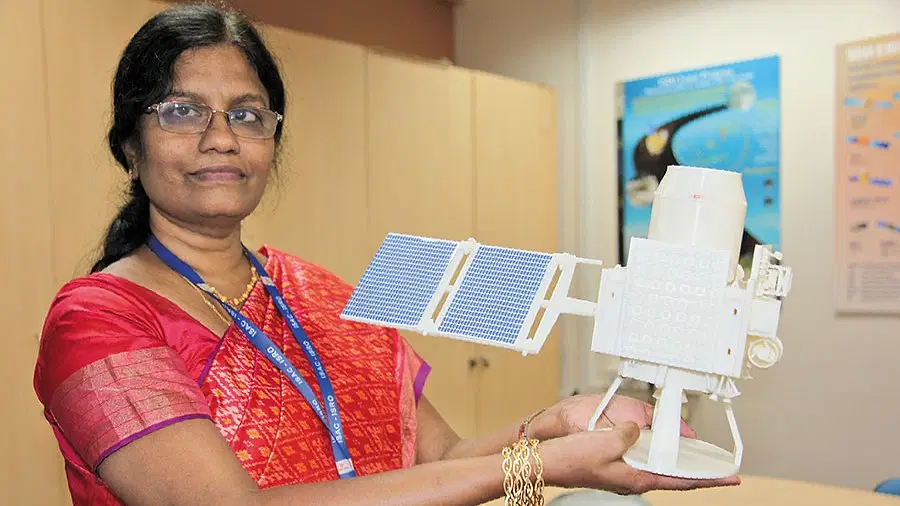

S Somanath, ISRO Chairman

"The brain behind India’s ambitious Moon mission is ISRO chief S Somanath. Somanath has also been given the credits for accelerating ISRO’s other missions including Gaganyaan and Sun-mision Aditya-L1. Somanath has also served as the director of the Vikram Sarabhai Space Centre (VSSC) and the Liquid Propulsion Systems Centre — the primary centres for development of rocket technologies for ISRO, before heading India’s space organisation."
P Veeramuthuvel, Chandrayaan-3 project director

"The project director for India’s latest lunar touch-down mission is P Veeramuthuvel. In 2019, he took charge for the mission. Veeramuthuvel was serving as a deputy director in the Space Infrastructure Programme Office at the ISRO headquarters before the Moon mission started. He is known for his technical skills. Veeramuthuvel played a key role in Chandrayaan-2 mission as well, being the point person for its negotiations with National Aeronautics and Space Administration (NASA). A native of Villupuram in Tamil Nadu, Veeramuthuvel is an alumni of Indian Institute of Technology in Madras (IIT-M)."
Mohana Kumar, Mission director

"S Mohana Kumar, a senior scientists from the Vikram Sarabhai Space Centre, is the mission director for Chandrayaan-3. Kumar has worked as the director for the successful commercial launch of the One Web India 2 satellites on board the LVM3-M3 mission."
S Unnikrishnan Nair, Vikram Sarabhai Space Centre (VSSC) director

"S Unnikrishnan Nair is the head of Vikram Sarabhai Space Centre (VSSC) at Thumba in Kerala’s Thiruvananthapuram district. He and his team are responsible for the key functions of the crucial mission. The Geosynchronous Satellite Launch Vehicle (GSLV) Mark –III, which was renamed as Launch Vehicle Mark-III, rocket, was also developed by the Vikram Sarabhai Space Centre (VSSC)
"
M Sankaran, U R Rao Satellite Centre (URSC) director

"The director of U R Rao Satellite Centre, M Sankaran, is responsible for leading the satellite fraternity to meet the national requirements in the areas like communication, navigation, remote sensing, meteorology and inter-planetary exploration. In June, 2021, he took over as director of the lead centre in India for design, development and realisation of all satellites of ISRO.
"
A Rajarajan, Launch Authorisation Board (LAB) chief

"A scientist and director of the Satish Dhawan Space Centre SHAR (SDSC SHAR), Sriharikota, A Rajarajan, is an expert in the area of composites. He was looking after the fruition of solid motor production and launch complex infrastructure to meet ISRO’s increased demand of launches including launches for Human Space Programme (Gaganyaan) and SSLV. The Launch Authorisation Board (LAB) gives the go-ahead for the launch.
"
M Vanitha, (URSC) Deputy Director, Chandrayaan-3

"An electronics system engineer, Kalpana K led the Chandrayaan-3 team with unwavering determination amid the Covid pandemic challenges. She is the mastermind behind India's satellite endeavors, she played pivotal roles in the Chandrayaan-2 and Mangaly..."